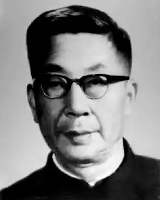

Ла́о Ше (кит. 老舍, Lǎo Shě; 3 лютого 1899, Пекін — 24 серпня 1966), справжнє ім'я Шу Шеюй, друге ім'я Шу Цінчунь (кит.: 舒慶春, Shū Qìngchūn) — китайський письменник.
Майбутній письменник народився у Пекіні, в маньчжурської сім'ї. Його батько, солдат, був убитий під час Іхетуаньського (Боксерського) повстання 1899—1901 рр. Мати працювала прачкою, щоб забезпечувати сім'ю та оплатити навчання сина.
У 1918 р. Лао Ше закінчив учительську семінарію. У 1924—1929 рр. він викладав китайську мову в Лондонському університеті. У Великій Британії Лао Ше написав свої перші соціальні романи "Філософія шановного Чжана" (1926 р.), "Чжао Цзиюе" (1927 р.), "Двоє Ма" (1928 р.), в яких відображений розвиток буржуазних відношень у феодальному Китаї. Після повернення до батьківщини в 1930 р., Лао Ше працював викладачем китайської мови в університетах та продовжив свою літературну діяльність. В 1933 р. він створив сатирико-фантастичний роман "Нотатки про котяче місто". В романах "Розлучення" (1933 р.), "Верблюд Сян-цзи" (1935 р., у перекладі відомий як "Рикша") та інших творах Лао Ше описав долю "маленької людини". Під час японської окупації (1937—1945 рр.) Лао Ше був головою "Всекитайської асоціації робітників літератури та мистецтва по відсічу ворогу". В романі "Спалення" (1940 р.), у п'єсах "Клоччя туману" (1940 р.), "Інтереси держави понад усе" (1943 р.) та ін. він осуджав зрадників батьківщини, виспівав мужність народу та дружбу проміж людьми різних національностей. У 1946—1949 рр. Лао Ше мешкав у США, де працював над трилогією "Чотири покоління під єдиним дахом" (про японську окупацію Китаю). Після проголошення Китайської Народної Республіки він повернувся на батьківщину. В КНР Лао Ше займав деякі адміністративні посади (став віце-президентом Союзу письменників Китаю, депутатом Всекитайського збору народних представників та ін.). Був оголошений "народним художником" та "великим майстром слова". Написав декілька ідеологічних драматичних творів та історичну драму "Кулак в ім'я справедливості" (1961 р., про Іхетуаньське повстання). Під час "Великої культурної революції" Лао Ше, як і багато інших письменників, був підданий критиці та переслідуванню. Внаслідок цього, 24 жовтня 1966 р. він був убитий чи здійснив самогубство.